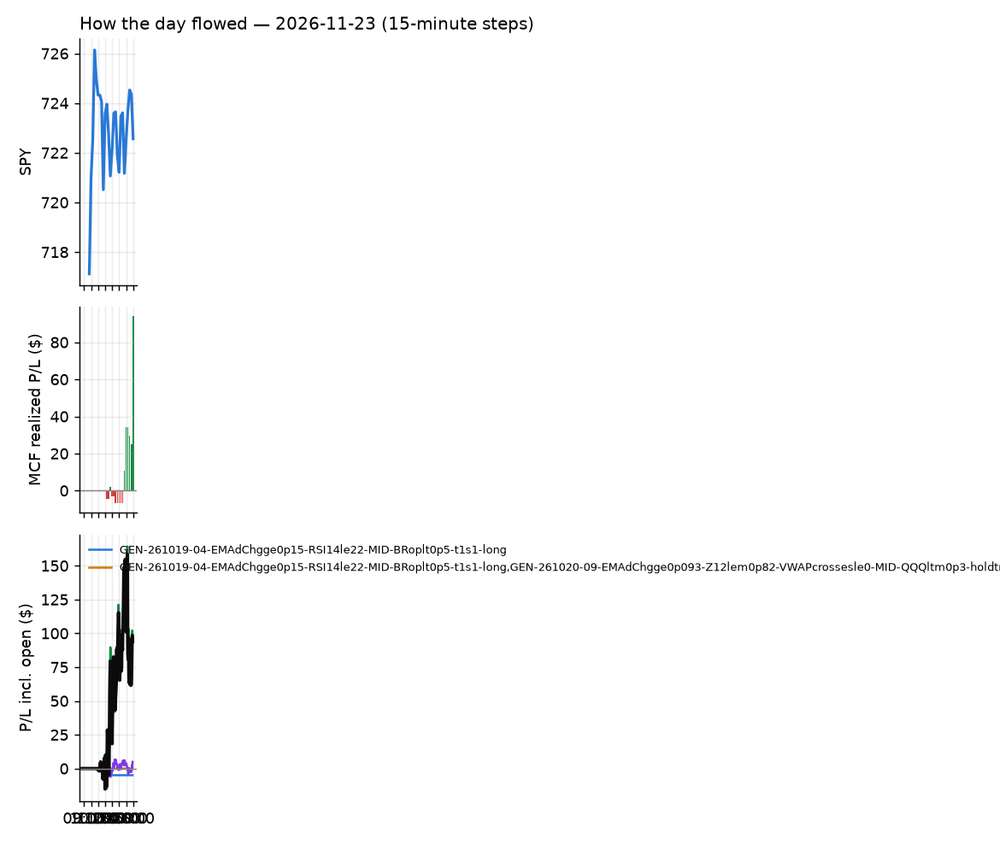
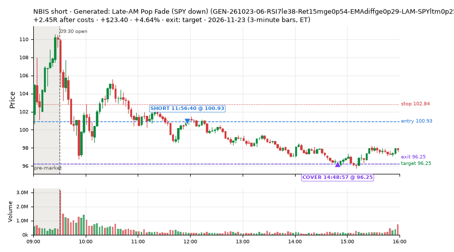
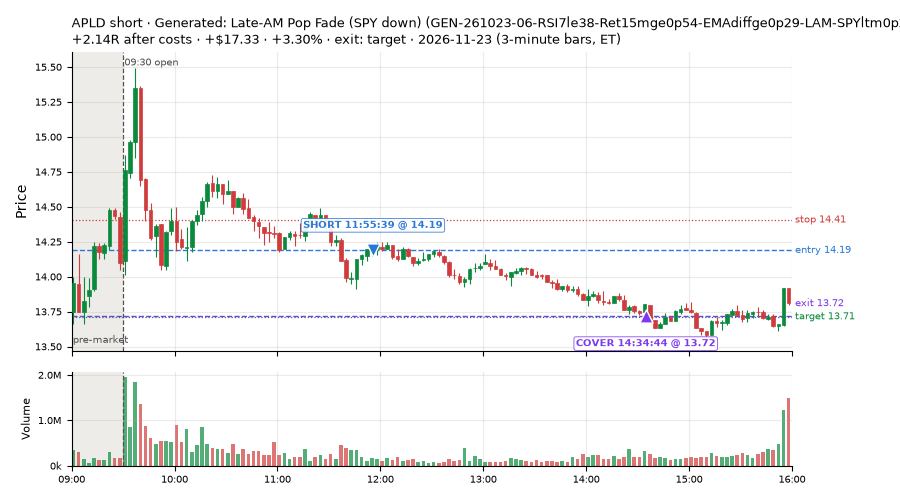
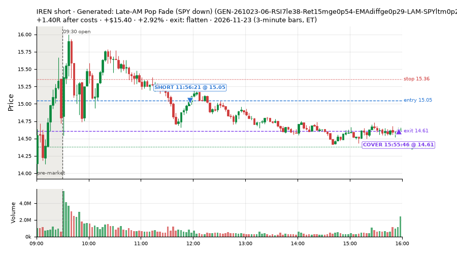
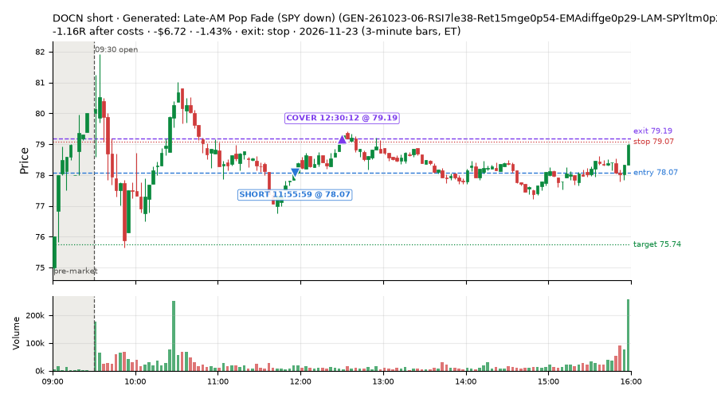
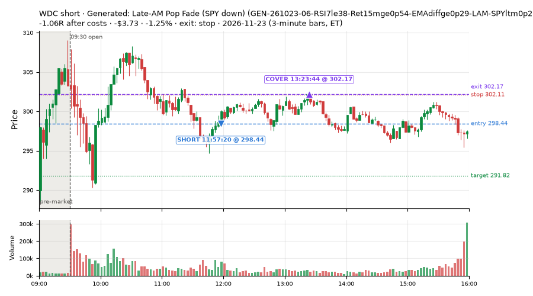
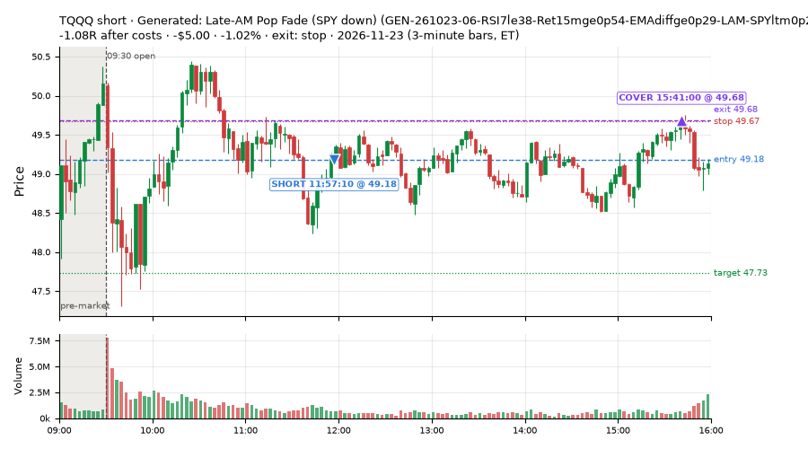
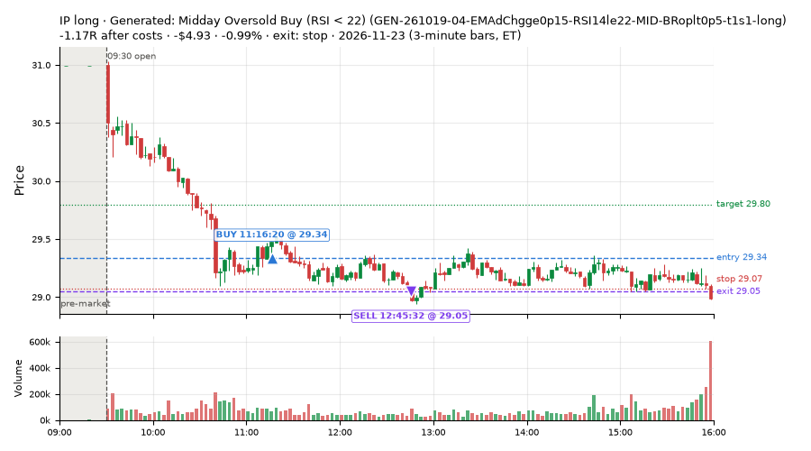
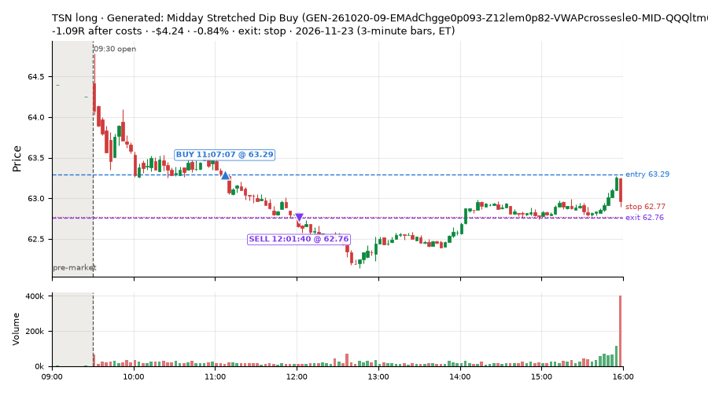

22 trades · win rate 73% · P/L $93.95
PROBATION: no live setup has passed both locked test periods. 10 owner-directed setups added 2026-10-08 (MarcoFlow top 5 + 5 new), untested live. RW6G1 (RW6 + VWAP band guard) added 2026-10-09, probation.

| Symbol | Setup | Side | In | Out | Entry | Exit | Exit reason | % gained | P/L |
|---|---|---|---|---|---|---|---|---|---|
| NBIS | Generated: Late-AM Pop Fade (SPY down) (GEN-261023-06-RSI7le38-Ret15mge0p54-EMAdiffge0p29-LAM-SPYltm0p25-t1s05-short) | short | 11:56 | 14:48 | 100.93 | 96.25 | target | +4.64% | $23.40 |
| APLD | Generated: Late-AM Pop Fade (SPY down) (GEN-261023-06-RSI7le38-Ret15mge0p54-EMAdiffge0p29-LAM-SPYltm0p25-t1s05-short) | short | 11:55 | 14:34 | 14.19 | 13.72 | target | +3.30% | $17.33 |
| IREN | Generated: Late-AM Pop Fade (SPY down) (GEN-261023-06-RSI7le38-Ret15mge0p54-EMAdiffge0p29-LAM-SPYltm0p25-t1s05-short) | short | 11:56 | 15:55 | 15.05 | 14.61 | flatten | +2.92% | $15.40 |
| Symbol | Setup | Side | In | Out | Entry | Exit | Exit reason | % lost | P/L |
|---|---|---|---|---|---|---|---|---|---|
| DOCN | GEN-261023-06-RSI7le38-Ret15mge0p54-EMAdiffge0p29-LAM-SPYltm0p25-t1s05-short | short | 11:55 | 12:30 | 78.07 | 79.19 | stop | -1.43% | $-6.72 |
| WDC | GEN-261023-06-RSI7le38-Ret15mge0p54-EMAdiffge0p29-LAM-SPYltm0p25-t1s05-short | short | 11:57 | 13:23 | 298.44 | 302.17 | stop | -1.25% | $-3.73 |
| TQQQ | GEN-261023-06-RSI7le38-Ret15mge0p54-EMAdiffge0p29-LAM-SPYltm0p25-t1s05-short | short | 11:57 | 15:41 | 49.18 | 49.68 | stop | -1.02% | $-5.00 |
| IP | GEN-261019-04-EMAdChgge0p15-RSI14le22-MID-BRoplt0p5-t1s1-long | long | 11:16 | 12:45 | 29.34 | 29.05 | stop | -0.99% | $-4.93 |
| TSN | GEN-261020-09-EMAdChgge0p093-Z12lem0p82-VWAPcrossesle0-MID-QQQltm0p3-holdtr-long | long | 11:07 | 12:01 | 63.29 | 62.76 | stop | -0.84% | $-4.24 |








Signal to fill: median 2s, 90th percentile 3s (22 trades). Bars close each minute; the order follows the bar close.
Best excursion (MFE): median 1.70R; worst (MAE) median 0.53R. 9% of trades never got +0.25R in our favour; 2 reached +1R and still closed at or below 0.
| Symbol | Setup | Best R | Worst R | Closed R |
|---|---|---|---|---|
| AMKR | GEN-261023-06-RSI7le38-Ret15mge0p54-EMAdiffge0p29-LAM-SPYltm0p25-t1s05-short | +1.63 | -1.13 | -1.18 |
| TQQQ | GEN-261023-06-RSI7le38-Ret15mge0p54-EMAdiffge0p29-LAM-SPYltm0p25-t1s05-short | +1.44 | -1.07 | -1.08 |
| CRWV | GEN-261023-06-RSI7le38-Ret15mge0p54-EMAdiffge0p29-LAM-SPYltm0p25-t1s05-short | +2.30 | -0.54 | +0.20 |
| IP | GEN-261019-04-EMAdChgge0p15-RSI14le22-MID-BRoplt0p5-t1s1-long | +0.89 | -1.15 | -1.17 |
| CRDO | GEN-261023-06-RSI7le38-Ret15mge0p54-EMAdiffge0p29-LAM-SPYltm0p25-t1s05-short | +1.75 | -0.54 | +0.18 |
| Entry time | Trades | Win | Avg R | P/L |
|---|---|---|---|---|
| 10:30-11:30 | 4 | 50% | -0.17 | $-0.14 |
| 11:30-13:00 | 18 | 78% | +0.61 | $94.09 |
| Setup | Trades | Win | Avg R after costs | Adj R (net of SPY) | Avg R ex-market (all sessions) | P/L |
|---|---|---|---|---|---|---|
| Generated: Midday Oversold Buy (RSI < 22) (GEN-261019-04-EMAdChgge0p15-RSI14le22-MID-BRoplt0p5-t1s1-long) | 1.0 | 0% | -1.17 | -0.71 | -0.12 (beta +0.57, n 231) | $-4.93 |
| Generated: Midday Stretched Dip Buy (GEN-261020-09-EMAdChgge0p093-Z12lem0p82-VWAPcrossesle0-MID-QQQltm0p3-holdtr-long) | 4.0 | 75% | +0.11 | +0.30 | +0.27 (beta +0.89, n 216) | $4.97 |
| Generated: Late-AM Pop Fade (SPY down) (GEN-261023-06-RSI7le38-Ret15mge0p54-EMAdiffge0p29-LAM-SPYltm0p25-t1s05-short) | 17.0 | 76% | +0.65 | +0.57 | +0.69 (beta -0.65, n 31) | $93.91 |
Market direction (SPY, beta 1) accounted for $0.92 of today's $93.95; the rest ($93.03) came from the setups themselves. Avg R net of SPY: +0.47 (incl. a hedge leg's cost; report only).
11 setups live today. Today: 28 signals, 22 taken, 0 lost because another setup held the symbol (0%). Since 2026-10-19 (26 sessions): 9989 signals, 4275 taken, 283 lost to other setups (3%). Peak open positions today 21 of 300 slots. Earnings blackout removed 148 symbols before scanning.
Simulated playing time (not live): 5689 what-if trades of signals not taken, avg -0.11R, 44% winners; of them 283 lost to another setup (avg -0.04R).
Silent: GEN-261021-08-RSI2le0-Ret15mATRge0p16-ATRdge3p6-LUNCH-QQQgt0p6-holdtr-long, GEN-POD1022-01-thrasher-breadth-thrust-stocks-holdtr-long
| Prio | Setup | Today sig / taken | Sessions | Signals / taken / trades | Taken/day | Expected/day | Lost to other setups | Lost to (setup n) | Top skip reasons | SIMULATED: not-taken n / avg R / win | Verdict |
|---|---|---|---|---|---|---|---|---|---|---|---|
| 1 | Generated: Late-AM New-High Short (QQQ down) GEN-261021-04-NewHOD-PDHdistlem0p65-LAM-QQQltm0p6-hold-short | 0 / 0 | 24 | 46 / 21 / 21 | 0.88 | – | 0 | – | not shortable / shorts off 13, spread / quote / size 11, broker rejected 1 | 25 / +0.73R / 48% | slow 4.4 entries/week; ~14 weeks to 60 trades |
| 2 | Generated: Midday Divergence Short (SPY up) GEN-261020-04-MACDhge0p12-BullDiv-MID-SPYgt0p25-t05s1-short | 0 / 0 | 25 | 79 / 7 / 7 | 0.28 | – | 1 | GEN-261028-05-EMAdChgge0p093-ORLdistlem0p42-LAM-QQQgt0p6-holdtr-long 1 | not shortable / shorts off 48, daily loss cap 20, broker rejected 2 | 72 / +0.06R / 74% | slow 1.4 entries/week; ~43 weeks to 60 trades |
| 3 | Generated: Morning RSI Drop Buy (strong mkt) GEN-261021-09-RSIslopelem19-ORHdistlem0p73-AM-BRvwgt0p7-t1s1-long | 0 / 0 | 24 | 22 / 11 / 11 | 0.46 | – | 2 | GEN-261023-03-RSI5le13-VWAPatrlem0p34-OPEN-BRvwgt0p6-holdtr-short 1, GEN-261026-05-Ret15mATRge0p042-FromPCATRge0p28-ORHdistlem0p38-OPEN-BRopgt0p5-hold-short 1, GEN-261029-08-Ret15mlem0p36-Flow3lem0p54-RSI14ge65-AM-SPYgt0p5-hold-short 1 | spread / quote / size 6, broker rejected 3, symbol held by another setup 2 | 11 / +0.67R / 91% | slow 2.3 entries/week; ~26 weeks to 60 trades |
| 4 | Podcast: Breadth Thrust, Index ETFs (observation) GEN-POD1022-02-breadth-thrust-index-etf-holdtr-long | 0 / 0 | 21 | 4 / 2 / 2 | 0.10 | – | 0 | – | spread / quote / size 2 | 2 / -1.02R / 0% | slow 0.5 entries/week; ~126 weeks to 60 trades |
| 5 | Generated: Late-AM Pop Fade (SPY down) GEN-261023-06-RSI7le38-Ret15mge0p54-EMAdiffge0p29-LAM-SPYltm0p25-t1s05-short | 22 / 17 | 22 | 70 / 31 / 31 | 1.41 | – | 2 | GEN-261022-01-ORBfailUp-ATRdge7p9-Eff6ge0p55-AM-SPYdn-hold-long 2 | not shortable / shorts off 18, spread / quote / size 18, symbol held by another setup 2 | 39 / -0.54R / 23% | slow 7.0 entries/week; ~9 weeks to 60 trades |
| 6 | Podcast: Bull Flag Breakout or Bailout (observation) GEN-POD1022-03-wt-bull-flag-bailout-S-long | 0 / 0 | 21 | 8 / 3 / 3 | 0.14 | – | 0 | – | spread / quote / size 3, other 2 | 5 / +0.25R / 80% | slow 0.7 entries/week; ~84 weeks to 60 trades |
| 7 | Generated: Midday Oversold Buy (RSI < 22) GEN-261019-04-EMAdChgge0p15-RSI14le22-MID-BRoplt0p5-t1s1-long | 2 / 1 | 26 | 444 / 231 / 231 | 8.88 | – | 7 | GEN-261022-09-Ret15mATRlem0p16-BarRngATRge0p11-ADX7ge64-AM-BRvwlt0p3-hold-short 7 | spread / quote / size 128, daily loss cap 41, broker rejected 22 | 212 / -0.01R / 49% | ok 44.4 entries/week |
| 8 | Generated: Morning Failed-Breakdown Short GEN-261020-10-BBpctge0p81-ORBfailDn-AM-BRvwlt0p3-hold-short | 0 / 0 | 25 | 426 / 152 / 152 | 6.08 | – | 0 | – | per-setup cap 120, spread / quote / size 75, not shortable / shorts off 73 | 274 / -0.45R / 26% | ok 30.4 entries/week |
| 9 | Generated: Midday Stretched Dip Buy GEN-261020-09-EMAdChgge0p093-Z12lem0p82-VWAPcrossesle0-MID-QQQltm0p3-holdtr-long | 4 / 4 | 25 | 294 / 216 / 216 | 8.64 | – | 16 | GEN-261022-09-Ret15mATRlem0p16-BarRngATRge0p11-ADX7ge64-AM-BRvwlt0p3-hold-short 16 | spread / quote / size 59, symbol held by another setup 16, other 2 | 78 / +0.44R / 65% | ok 43.2 entries/week |
| 10 | Generated: Open Below-Prior-Low Buy (big bar) GEN-261021-02-BarRngATRge0p14-PDLdistlem0p045-OPEN-SPYgt0p5-t1s1-long | 0 / 0 | 22 | 575 / 243 / 243 | 11.05 | – | 7 | GEN-261023-03-RSI5le13-VWAPatrlem0p34-OPEN-BRvwgt0p6-holdtr-short 5, GEN-261027-07-RSI14le35-FromOpenge2-AM-BRvwlt0p5-t1s1-short 1, GEN-261029-09-RangeExpge1p6-Since950ATRlem0p43-OPEN-BRvwgt0p5-hold-short 1 | per-setup cap 161, spread / quote / size 161, symbol held by another setup 7 | 332 / +0.17R / 63% | ok 55.2 entries/week |
| 11 | Generated: Late-AM Failed-Breakout Buy GEN-261029-01-ORBfailUp-RSI14le41-ADX7le29-LAM-QQQgt0p3-hold-long | 0 / 0 | 18 | 387 / 121 / 121 | 6.72 | – | 6 | GEN-261029-08-Ret15mlem0p36-Flow3lem0p54-RSI14ge65-AM-SPYgt0p5-hold-short 3, GEN-261022-08-EMAdChglem0p094-Flow3ge1-RVolDayle0p59-AM-SPYgt0p25-holdtr-short 2, GEN-261022-07-Z12lem1p9-FlowShiftlem0p96-ATRdge3p6-AM-BRopgt0p5-t1s1-short 1 | broker rejected 137, daily loss cap 75, spread / quote / size 48 | 266 / -0.21R / 40% | ok 33.6 entries/week |
Every trade is attached as a CSV you can open and edit in Excel or Google Sheets. Live page: https://misiti15.github.io/MCF/live/